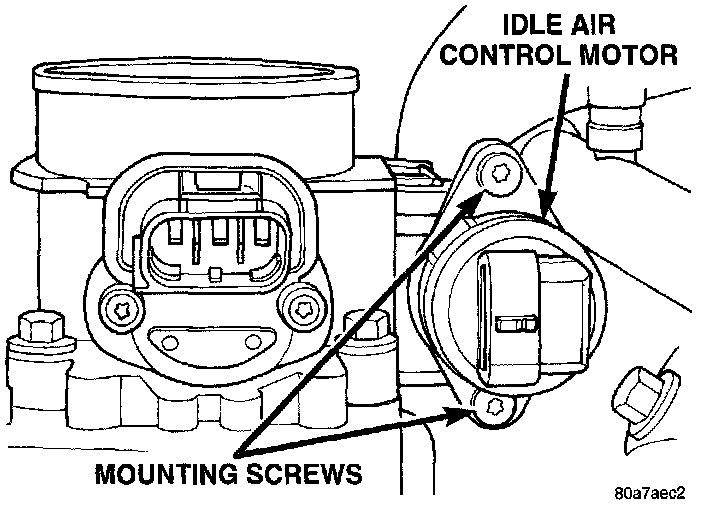

Idle Speed/Throttle Actuator - Electronic: Service and Repair
IDLE AIR CONTROL (IAC) MOTORThe Idle Air Control (IAC) motor is located on the side of the throttle body.
REMOVAL
1. Remove air cleaner tube at throttle body.
2. Disconnect electrical connector from IAC motor.
Fig. 72 IAC Mounting Screws:

3. Remove two mounting bolts (screws) (Fig. 72).
4. Remove IAC motor from throttle body.
INSTALLATION
1. Install IAC motor to throttle body.
2. Install and tighten two mounting bolts (screws) to 7 Nm (60 in. lbs.) torque.
3. Install electrical connector.
4. Install air cleaner tube to throttle body